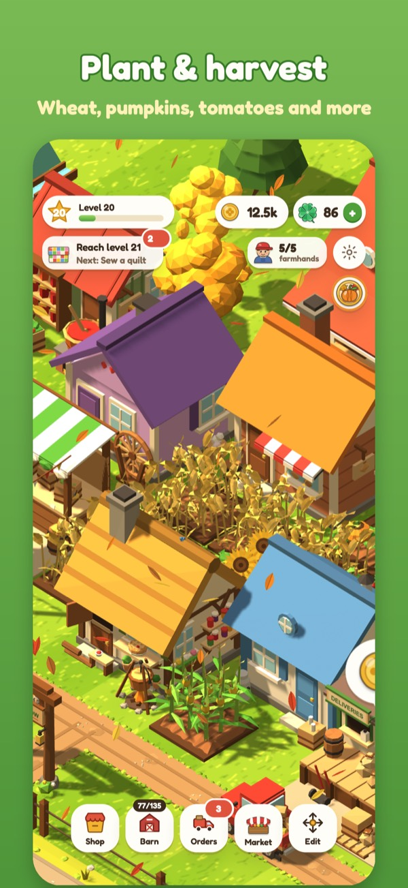
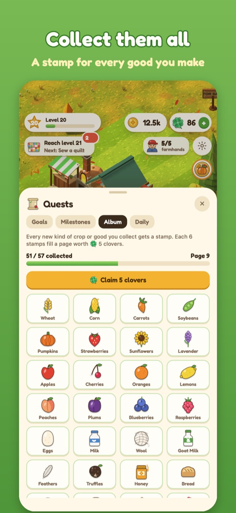

Take a peek at the hollow





Swipe to see more →
So much to do, no rush to do it
Grow crops
Wheat, pumpkins, strawberries, sunflowers and orchards of fruit. Tap to harvest.
Raise animals
Chickens, cows, sheep, goats, ducks, pigs and fluffy alpacas. Collect eggs, milk and wool.
Bake & craft
Bake bread and pizza, churn cheese, press juice, can salsa and sew quilts.
Run a farm market
Fill neighbor orders, load the delivery truck and stock your market stalls.
Collect album stamps
Earn a stamp for every good you make and fill your album page by page.
Plays offline
On a plane, on the train, in the garden. No internet connection needed.
iCloud save
Your farm saves automatically and follows you to a new iPhone.
No ads, no tracking
No account either. Just you, your fields, and some very happy chickens.
Clover Hollow Support
Email joshkirouff@gmail.com. Tell us your iPhone model, iOS version, and what happened. We usually reply within two business days.
Common questions
- How do I get my farm on a new iPhone?
Your farm saves to your own iCloud automatically. Sign in to the same Apple Account on the new iPhone, install Clover Hollow, and open it. Your farm comes back on its own.
- I bought the Starter Pack but don't have it.
Open Settings in the game (the gear button) or the clover shop and tap Restore purchases. Clover packs are used up when you spend them, so only the Starter Pack can be restored.
- A purchase is "waiting for approval".
That's Apple's Ask to Buy. When a parent approves it, the clovers arrive the next time you open the game.
- How do I get a refund?
Refunds are handled by Apple. Visit reportaproblem.apple.com.
- How do I turn reminders on or off?
In the game, open Settings and use the Reminders switch. You can also change it in iOS Settings › Notifications › Clover Hollow.
- Do clovers expire?
No. Clovers you buy or earn never expire.
Privacy
No account, no ads, no tracking. Read the full privacy policy.